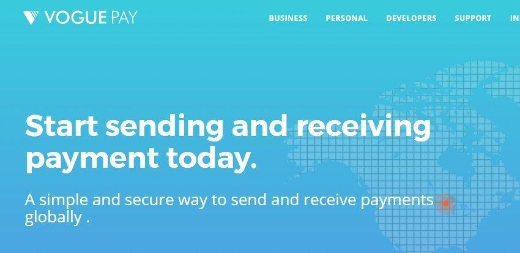

VOGUEPAY · FINTECH · HYBRID GROWTH
How VoguePay scaled to 100,000+ merchants and $137m in peak monthly processed transactions.
As Head of Digital Strategy, Ogunlade Oluwole connected product, compliance, checkout, content and referrals into an international merchant-growth system.
- Role
- Head of Digital Strategy
- Primary constraint
- International onboarding and monetization friction
- Motion
- Product-led conversion plus content, referrals and integrations

Four initiatives became one international revenue motion.
Opened the platform to international merchants.
Redesigned onboarding for multi-country KYC, collections and settlement.
14,000+ international merchantsMade more international transactions possible.
Expanded collection across bank, card and alternative methods in USD, EUR, NGN and other currencies.
$137m peak monthly processed valueTurned education into acquisition and support.
Built a knowledge base of 90 articles and 80 FAQs for discovery, activation and self-service.
400,000+ viewsTurned merchant trust into a scalable channel.
Published promotional and support content that helped merchants understand and adopt the referral programme.
44.26% of all visits from referralsInternational demand→Compliant onboarding→Multi-currency checkout→Completed transaction→Referral growth